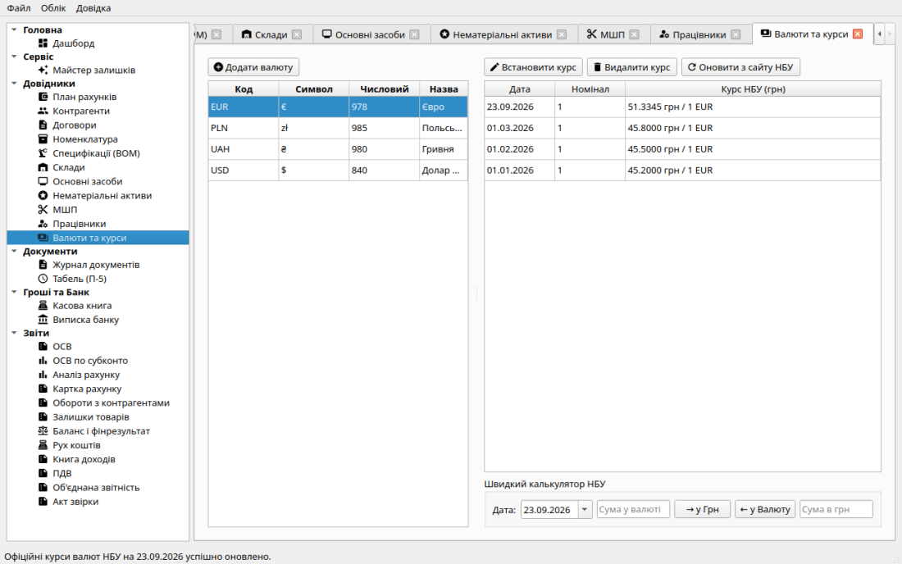

Мультивалютний облік та курсові різниці (НП(С)БО 21)
Система «Фінік» підтримує повноцінний бухгалтерський облік операцій в іноземних валютах відповідно до вимог НП(С)БО 21 «Вплив змін валютних курсів».
Усі суми в бухгалтерських реєстрах (Головній книзі, складських рухах, балансі) фіксуються в національній валюті України (гривнях з копійками), а також паралельно зберігають суму в іноземній валюті та курс Національного банку України (НБУ).
Довідник валют та курси НБУ
У лівій панелі навігації доступний розділ «Валюти та курси»:
- Довідник валют: перелік міжнародних валют (USD, EUR, PLN, GBP, CHF тощо) з літерними та числовими кодами ISO 4217 і графічними символами.
- Історія курсів: ведення курсів НБУ на будь-яку дату. Курс зберігається у форматі фіксованої точності з 4 знаками після коми (номінал 1 або 100 одиниць) без втрати копійок при округленні.
- Вбудований валютний калькулятор: швидка конвертація сум між валютами за актуальним курсом.

Розділ «Валюти та курси»: список валют, історія встановлення курсів НБУ та калькулятор швидкого перерахунку.
План рахунків для валютного обліку
Для відображення валютних операцій використовуються спеціалізовані субрахунки:
- 312 — Поточні рахунки в іноземній валюті;
- 302 — Готівка в іноземній валюті (валютна каса);
- 334 — Грошові кошти в дорозі в іноземній валюті (купівля/продаж валюти);
- 362 — Розрахунки з іноземними покупцями (експорт);
- 632 — Розрахунки з іноземними постачальниками (імпорт);
- 3712 — Аванси видані у валюті (немонетарна стаття, не переоцінюється);
- 6812 — Аванси одержані у валюті (немонетарна стаття, не переоцінюється);
- 714 — Дохід від операційної курсової різниці (пасивний дохід);
- 944 — Втрати від операційної курсової різниці (активні витрати).
Проведення валютних первинних документів
При оформленні документів зовнішньоекономічної діяльності (імпорт товарів, послуги нерезидентів, експортна реалізація, валютні банківські платежі):
- Користувач обирає валюту документа (наприклад, USD) та вказує курс або використовує останній зареєстрований курс НБУ на дату операції.
- У табличній частині суми та ціни вводяться у валюті документа.
- При проведенні документ автоматично перераховує кожний рядок у гривні за офіційним курсом і створює проводки в Головну книгу. Первісна вартість оприбуткованих імпортних запасів (Дт 281) фіксується у гривнях.
Переоцінка монетарних статей та курсові різниці
Згідно з нормами НП(С)БО 21 курсові різниці визначаються за монетарними статтями
(грошові кошти 312 / 302 / 334 та валютна заборгованість 362 / 632).
Аванси 3712 і 6812 є немонетарними й не переоцінюються.
- На дату закриття звітного періоду (місяця): при закритті місяця
система порівнює балансову вартість у гривнях з оцінкою за курсом НБУ
на кінець місяця та формує проводки курсових різниць:
- Курсовий дохід: Дт 312/302/334/362 Кт 714 або Дт 632 Кт 714.
- Курсові витрати: Дт 944 Кт 312/302/334/362 або Дт 944 Кт 632.
Переоцінка 362/632 ведеться в розрізі контрагента. Якщо для валюти з ненульовим залишком немає курсу НБУ —
закриття місяця не формується (помилка).
- Закриття на фінансовий результат: субрахунки 714 та 944 закриваються на рахунок 79,
а кінцевий фінансовий результат переноситься на рахунок 44.
Звіти з валютною аналітикою
Оборотно-сальдова відомість для рахунків з однією інвалютою показує код валюти та валютне сальдо
на початок/кінець. Картка рахунку (екран і друк) містить колонки «Валюта», «Вал. Дт», «Вал. Кт»
поряд із гривневими сумами проводок.